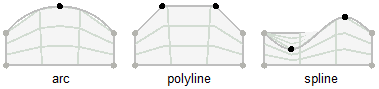
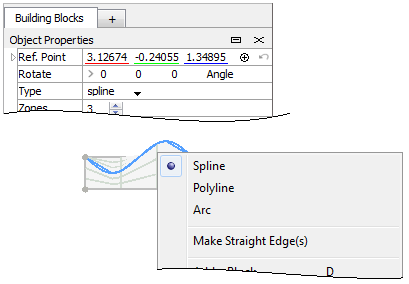
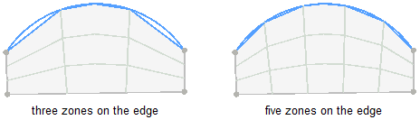
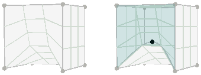

曲线棱边和控制点
工具栏中的控制点工具（ ）用于塑造棱边（以及面）的形状。它使鼠标进入一种模式，以便逐个添加棱边控制点。
）用于塑造棱边（以及面）的形状。它使鼠标进入一种模式，以便逐个添加棱边控制点。
使用控制点工具单击棱边时，该棱边上会添加一个控制点。用鼠标拖动该控制点时，棱边的形状会随之改变。
可使用三种类型的棱边。

选中控制点后，可以在对象属性控件组中或通过棱边的上下文菜单更改棱边类型。

上下文菜单中还有“使棱边变为直线”命令，该命令将从棱边上移除所有控制点。
“圆弧”类型的棱边只能有一个控制点；其他棱边类型则使用多个控制点。
可以同时选中多个控制点，但一次只能针对一条棱边。
创建圆弧或样条曲线时，您可能会看到绘制网格单元的线条与显示曲线棱边的线条之间存在偏差。可通过增加该棱边的网格单元数来消除这种偏差。

透明面
在控制点模式下工作时，鼠标所指向的任何面都会变为透明。透明面允许访问位于网格单元内部的控制点，这些点也称为埋入控制点。透明面还允许访问棱边和体点。但是，无论埋入的点是控制点还是体点，点到点捕捉都不会将点 A 捕捉到埋入的点 B。

访问埋入点的另一种方式是使用鼠标滚轮放大到块体内部。
| 这些内容对您有帮助吗？… | FLAC3D © 2019, Itasca | 原文更新于 2020 年 10 月 8 日 |
| 版权与免责声明 | ||